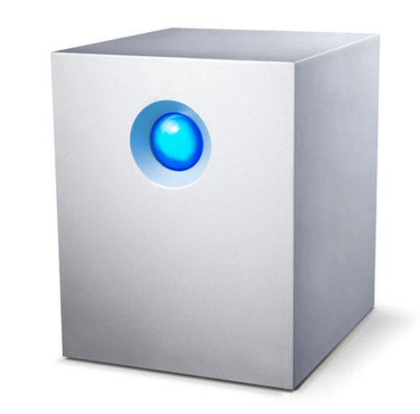

Navigation
index
next
|
TurboNAS 0.5 documentation
»
Table Of Contents
Welcome to TurboNAS ‘s documentation!
Indices and tables
Next topic
Introduction
This Page
Show Source
Quick search
Enter search terms or a module, class or function name.
Welcome to TurboNAS ‘s documentation!
¶

Contents:
Introduction
Status and Responses
Status Codes
Error Messages
iSCSI
iSCSI Service Object
iSCSI Target Object
GET iSCSI Shares
POST - Create iSCSI Share
DELETE - Delete iSCSI Share
PUT - Edit iSCSI Share
Disks
Disk Object
GET - Disks
PUT - Claim Disk
POST - Eject Disk
Smart test
Smart Test Object
Volumes
Volume Object
GET Volumes
POST - Create Volume
DELETE - Delete Volume
PUT - Edit Volume
PUT - Migrate Volume
PUT - Extend Volume
PUT - Recover Volume
Shares
Share Object
GET Shares
POST - Create Share
DELETE - Delete Share
PUT - Edit Share
Users and Groups
User Object
GET Users
POST - Create User
DELETE - Delete User
PUT - Edit User
Group Object
GET Groups
POST - Create Group
DELETE - Delete Group
PUT - Edit Group
Network
Network Object
GET Network
PUT - Edit Network
Device
Firmware Object
Firmware Progress Object
GET Firmware setup
GET - Firmware Progress
SET Firmware Preferences
RBM
RBM Object
GET RBM details
DELETE - Delete Files
Quota
Quota Object
GET quota details
SET quota details
Disable_quota
Edit_user_quota
Add_user_quota
Remove_user_quota
Services
Services Object
GET service details
SET service details
UPS
UPS Object
GET Ups
POST - Enable ups
POST - Disable ups
General Setup
General Object
GET Setup details
SET NTP details
Notifications - Events
Events Object
GET Events
POST - Save Events
Notifications - Targets
Targets Object
GET Targets
POST - Save Target
Interface
Firewall Object
GET firewall
POST - Add IP
POST - Delete IP
DDNS
DDNS Object
GET DDNS
POST - Add DDNS
Workgroup
Workgroup Object
GET Workgroup
POST - Add Workgroup
Indices and tables
¶
Index
Search Page
Navigation
index
next
|
TurboNAS 0.5 documentation
»
{kind=link}